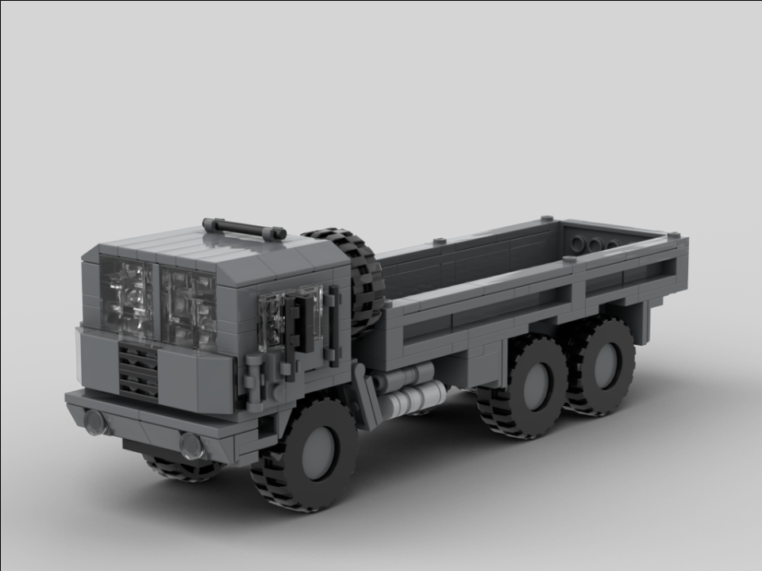
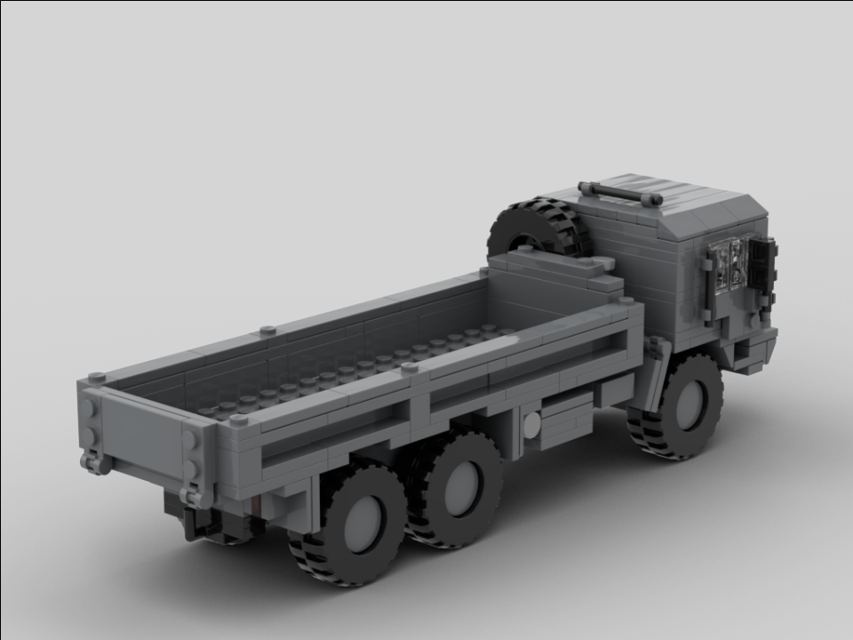
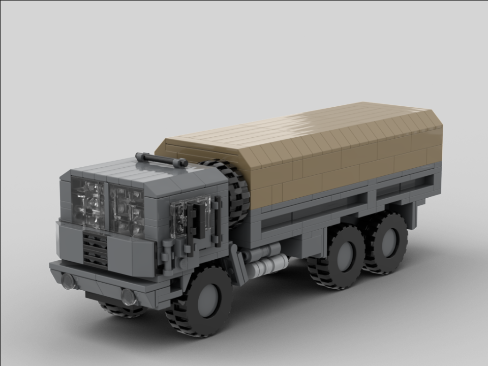
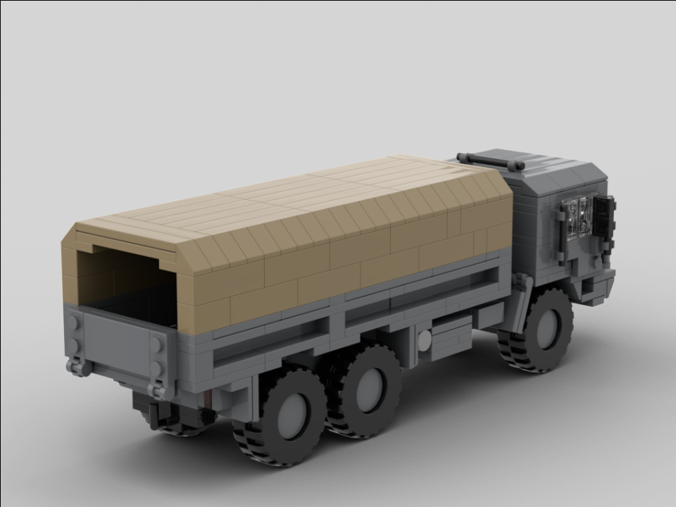

The 10DM 6x6 Truck is a heavy truck in service with the Swiss army since 1983. It has a payload capacity of 10 tons, hence the designation 10DM. There are multiple configurations of the vehicle, mainly as a flatbed with a canvas cover for holding equipment and troops, but a firefighting variant and a heavy lift crane variant also exist. The vehicle is currently being phased out in favor of newer trucks.
This model features two opening side doors, an opening rear gate, a spare wheel in between the bed and the cab, and 6 rolling wheels (wow!). In addition to the instructions for the flatbed model, there are instructions for an optional (but suggested) canvas cover.

Deployed:
